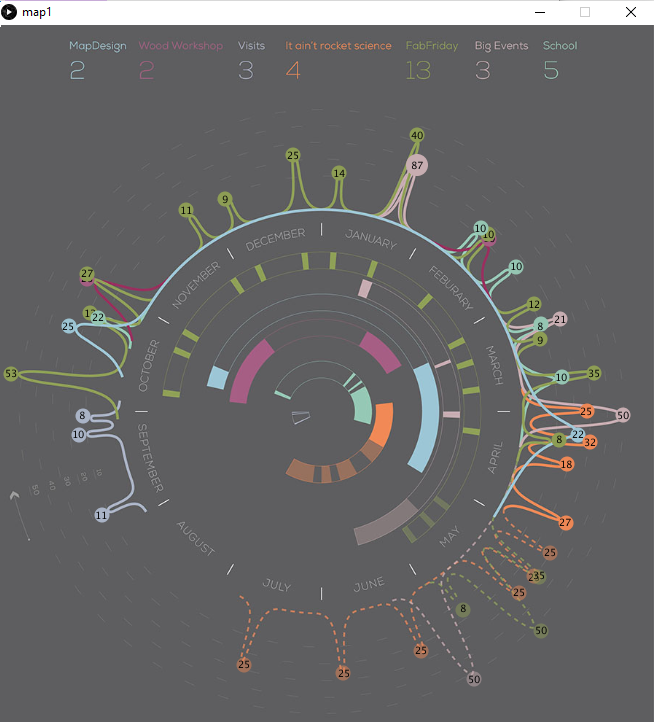

FabLab Data Visualisation
As a part of a research program on how to develop efficient interactive data visualizations that enable decision makers to see analytics presented visually, so they can grasp difficult concepts or identify new patterns. With interactive visualization, you can take the concept a step further by using technology to drill down into charts and graphs for more detail, interactively changing what data you see and how it’s processed. Developed and Interactive map to so data processed as information for the FabLab's varoius activities around the year by using Processing.Js And D3.js for data visualisations.
